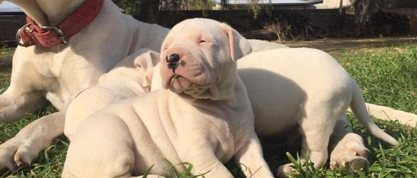
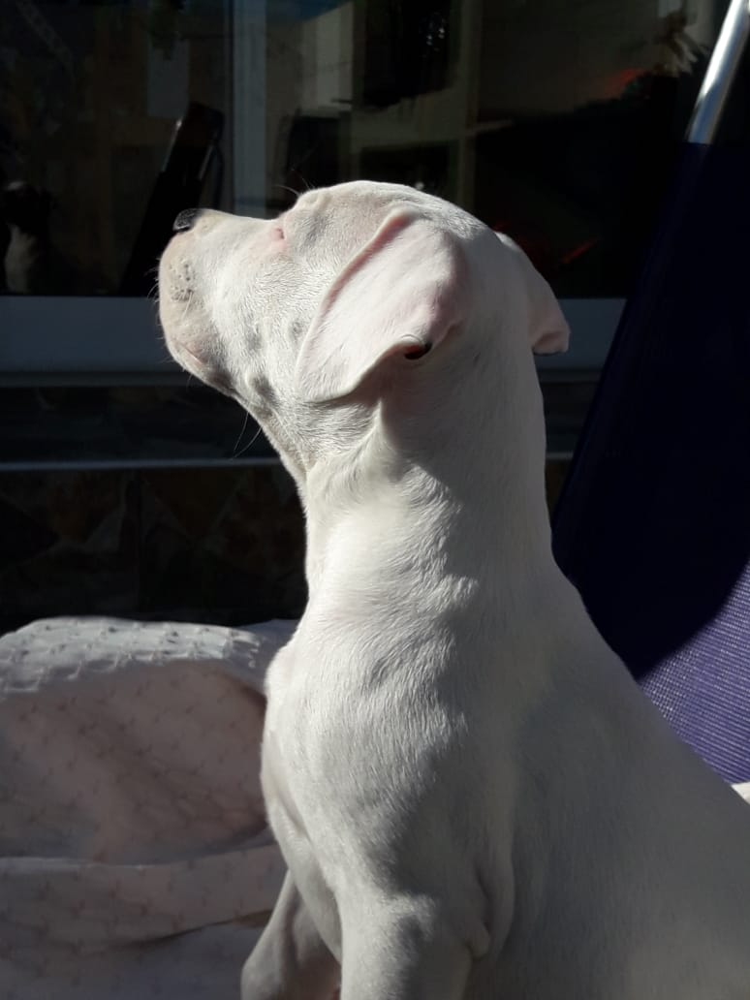

La Raza
Fue desarrollada por el médico argentino Dr. Antonio Nores Martínez,
nacido en Córdoba en el año 1907 y fallecido en el año 1956, eminente
y activo cirujano, quien buscaba un animal adecuado para la caza mayor
de especies habituales en Argentina, tales como jabalíes, pecaríes,
pumas y zorros colorados. La genetica,maravillosa disciplina que logro
en cada detalle preparar los ejemplares para las funciones que hoy en
dia cumplen.

El Criadero
El Sauco es un criadero de dogos Argentinos ubicado en Córdoba
Capital, avalado por la F.C.A (Federación Cenologica Argentina) y apto
para criar ejemplares con pedigree. El criadero lleva 5 años y tiene
como filosofía el criar los ejemplares con el mayor cuidado, y
dedicación, similar al que va a recibir cuando llegue con su “nueva
familia”.
Se hace mucho incapie en el cuidado al detalle, tanto de los ejemplares, como de los cachorros,
tambien buscamos el mayor grado de sanidad posible en nuestras instalaciones,cuestiones que tambien
repercuten en la salud de los animales.
